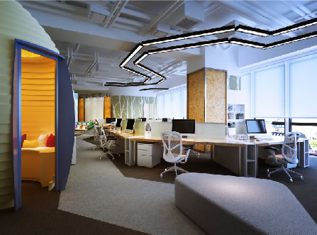
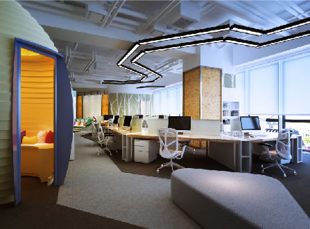

「国馆·中国道」不仅是酒，更是颠覆传统白酒的杰作。
它在器型工艺、文化内涵、大师跨界、酒体酿造、收藏品鉴……等方面展现前所未有的极致，远逾酒本身。
迄今为止，能把这五大价值集于一身的，舍「国馆·中国道」无他。

作为一款颠覆性的作品，「国馆·中国道」在很多方面都堪称独创，第一眼就能感受到它的与众不同：极致中国风的卷轴造型，极尽繁复的景泰蓝纹饰，极简主义的瓶型， 让每个看到它的人，都为之惊艳，为之爱不释手。
进一步了解 国馆·中国道的器型设计 >
多数白酒文化日渐沦为酒桌文化，而「国馆·中国道」让文化实至名归。四种堪为座右铭的人生哲学，以酣畅书法跃然瓶身之上，“文化”从此看得见，摸得着，品得到。
进一步了解 国馆·中国道的文化内涵 >
“首届中国酿酒大师”是白酒界最高的荣誉，全国仅有32位，代表了行业的顶尖水准。「国馆·中国道」由首届中国酿酒大师李家顺匠心酿制，并邀请艺术大师李正天题写瓶身书法字，精妙绝伦的酿酒艺术与妙入毫巅的书法艺术，于此融为一体。
进一步了解 酿酒大师和艺术大师 >
沱牌舍得泰安作坊——首批中国食品文化遗产、国家级保护文物。中国名酒厂众多，但获“首批”殊荣的不超过5家。「国馆·中国道」选用泰安作坊窖龄老酒作为专属酒体，千年老窖万年糟，数百年老窖池酿出的酒绝非寻常可比，中国品酒大师钟杰赞誉其为“酒中的极品”。
进一步了解 稀缺好酒是怎样酿成的 >不是所有的酒，都适合收藏。在我们看来，能称之为“收藏级”的酒，除了可以品鉴，更要能玩味、能珍藏、甚至能升值。99%的酒只能摆上饭桌，而首批仅有5000套的「国馆·中国道」足以登堂入室。
进一步了解 国馆·中国道的收藏价值 >这是一套绝大多数人猜不出价格的作品，而我们让大多数人消费得起。同等档次和品质的白酒市场售价超过6000元，而「国馆·中国道」一套四支，全网售价仅为2399元。并且，首批限量5000套。
对许多人来说，喝酒曾经是一桩很暖心窝的事：一碟花生米，几分闲情逸致，和家人小酌，和哥们儿欢饮……然而，当你怀揣梦想雄心勃勃进入社会，加班、出差、应酬、喝酒、喝酒、喝酒……喝酒这件事儿一旦上升到生存技能层面，就变成了一件很让人蛋疼的事情。
有多少人日复一日周旋在酒桌饭局之间？一组真实而触目惊心的数据：早在2009年，中国人每年喝掉的粮食就有300亿公斤，按2公斤粮食酿1公斤酒来算，13亿中国人平均每人每年负责消耗11.5公斤酒，即一斤装的酒23瓶。全国有2亿以上“饮酒成癖”的酒民，每年有11万人死于酒精中毒，相当于平均每5分钟，就有1个人因酒精中毒挂掉。
酒场凶猛，人生苦短，现实越来越让人感到无力：工作到现在，我们到底喝了多少不想喝的酒？我们与真正的酒文化是不是越走越远了？酒，只能这样喝吗？
2014年，一群怀抱梦想的人，正在用他们的行动给出答案。
这群人里，有中国酿酒大师、国学大师、艺术家、酒业专家、心理学专家、设计牛人、互联网精英……这是一个横跨白酒与艺术、传统与互联网的团队。在白酒领域的长期浸淫中，我们感受到中华酒文化生生不息的魅力，也看到了传统白酒浮躁、扭曲的现实困境。我们致力于重新发现中国文化，颠覆传统白酒，让白酒成为文化最温暖的表达方式。
我们做了一件事——国馆。

 

为什么是“国馆”？市场上“国”字号的白酒比比皆是，国酒茅台、国窖1573、国藏汾酒……“国馆”凭什么跟这些老大哥较劲？答案是：国馆不是在跟酒业巨头较劲，国馆是在向传统文化致敬。过去十多年，白酒高歌猛进，前所未有的繁荣掩盖了行业许多本质性的问题，白酒和它本身所承载的文化，在过度消费、畸形消费中日益断裂，人们为面子而喝，为关系而喝，为目的而喝……而国馆希望的，是让白酒回归文化，让文化像美酒一样温暖人心。
国馆酿造的，是流淌在中国人情感中的那杯酒。
为了酿造心中的这杯酒，我们对几乎所有的环节，都做到了极致的追求。
最重要的——酒体。为了你能喝到最好的酒，我们的专业品酒师访遍天下名酒厂，最终把目光锁定在川酒六朵金花之一的——沱牌舍得，泰安作坊老窖池原址酿造的顶级窖龄酒。懂白酒的都知道，“千年老窖万年糟”，窖池越老，酿酒越好。泰安作坊老窖池从明清传承到现在，不间断持续酿造，窖池内微生物世代繁衍，酿造出来的酒绝非寻常可比。我们特别邀请首届中国酿酒大师李家顺调制酒体，幽雅馥郁，醇厚绵长，粮香、窖香交织，堪称浓香一绝。为了测试酒体口感，我们邀请多位业内专家把它和几款同档次名牌酒进行盲品比较，得出来的结论是：这款酒的品质，可以秒杀市面上绝大多数白酒。


更彻底的颠覆——文化。尽管几乎所有的白酒都宣称自己是文化酒，但唯一彻底地将文化基因注入白酒之中的，只有国馆。仿效著名的木桐酒庄，国馆的每一款产品都会与艺术家跨界创作，这足以让国馆的产品气质完爆普通白酒十几条街。譬如，我们邀请国学大师饶宗颐为国馆题写“酒以载道”，邀请著名艺术家、书法家李正天先生为国馆首款产品“中国道”题写瓶身书法。有人说，白酒不过是附庸风雅，而我们从一开始就为国馆注入文化、艺术的生命基因。国馆酒，你可以喝，可以把玩，更可以收藏。

包装——我们同样追求极致。国内顶尖的酒类包装设计团队，十余年产品设计经验，历时两年反复打磨一款包装，从几百款古代器型中汲取灵感，不计成本打样数十次（据说供应商都快哭了）。如此苛刻，试问国内有几个酒品牌能做到？这还不够，这帮吹毛求疵的设计师还找到了国内最专业的包装制作团队，为“中国道”定制了惊艳的景泰蓝卷外轴套……还不够！为了达到最佳陈设效果，他们又量身定制了高档陈列底座。喏，就是下面这样：

更极致的考验——物流。首先，由于酒是液体和易碎品，只能发陆运，陆运意味着漫长的周转时间，为了让你不用等太久，我们果断选择了价格偏贵、但速度更有保障的XX物流。其次，如果你在网上买过酒，一定会被那些简陋、粗暴的包装震惊到，如果运气不好，漏酒破损什么的更令人揪心。为了彻底改变白酒物流低劣、粗暴的消费体验，我们再一次豁出去了！——定制！根据每一款酒的不同大小，量身定做高硬度重型纸箱（比苹果电脑用的那种外纸箱还要厚、还要硬）。不，这还不够，为了确保安全，我们将破坏性测试进行到底，让公司里身高一米八、重约0.2吨的西北大汉踩上去……结果：毫无压力，完好无损。
如上所述这些，只是整个庞大系统里面的几个环节。一瓶酒，从原粮、取水、制曲、发酵、摊晾、蒸馏、储藏、勾调……到包装、发货、物流、配送……最终到达你的手中，前前后后要经过可能不少于100道工序，辗转上百人之手，从此处到彼处，从嘴里，到心里。
这样极致而美好的酒，该怎样才能不辜负它？这样珍贵的礼物，只适合送给最尊敬的人——你的长辈，或是事业上的贵人。或者自私点儿，干脆自己收藏吧，摆在客厅彰显逼格。对了，别轻易喝了它！好酒是一定会升值的，更何况是限量版的“国馆•中国道”呢！
好了，回到文章最初的问题：酒，只能这样喝吗？
答案已经显而易见：当我们摒弃浮躁、功利、走偏的白酒文化，回到酒本身，自然就能发现它的美妙，发现它所承载的文化与情感，发现与它有关的一切故事。在国馆，我们用文化浅斟慢饮，重新发现遗落的美好。
因为我们相信：每个中国人心里，都有一杯温暖的酒。
我们用这杯酒，向传统文化致敬，向生命中的美好致敬。
我们相信，生命中的美好，一定会抵达。


「国馆•中国道」选用的酒体，来自中国名酒、川酒六朵金花之一的沱牌舍得。沱牌舍得以生态酿酒、品质卓越著称，尤其是它的高端浓香型白酒，不仅储量位居行业前列，品质更树立了中国白酒的生态标杆。
「国馆•中国道」为什么选用沱牌舍得，尤其是它最为著名的泰安作坊窖龄老酒？理由很简单，极致的产品必须要有极致的包装、极致的品质、极致的口感、极致的体验……在我们看来，“极致”是对一瓶酒最高的尊重。在严苛的“顶级品质白酒八大标准”检视之下，我们酿出了「国馆•中国道」。

满墙葱茏欲滴的爬山虎，林中活泼肥硕的小斑鸠……这不是在森林公园，而是沱牌舍得生态酿酒工业园。作为中国名酒、川酒六朵金花之一，沱牌舍得在“中国白酒金三角”版图中占据着至关重要的位置。沱牌舍得所在地——遂宁市射洪县，位于巴蜀腹心地带，顶级白酒的黄金产区。射洪的土壤、水源、空气、微生物等天然优势，为沱牌舍得构筑了绝无仅有的酿酒生态循环体系。依托特有的生态优势，沱牌舍得打造了以生态产区、生态净水、生态原粮、生态制曲、生态窖藏等为核心的全生态酿酒产业链，完成了让生态酿酒理念贯穿产前、产中、产后的行业创举。


优质的“水”为「国馆•中国道」提供了有力的质量保障。经考证，沱牌舍得酿酒所用“沱泉水”发源于雪山，为裂隙承压经植物质矿化层与砂砾渗透上涌水，具有无色、无味，清澈透明、无悬浮物、水温稳定等优点，富含的多种有益于人体的微量元素。从唐时春酒始，柳树镇历代民众即以该泉水酿酒。
「国馆•中国道」的酿酒原粮来自东北，一年一熟的顶级原粮保证了顶级酒的最佳品质。「国馆•中国道」酒体由高粱、大米、糯米、玉米、小麦、大麦六种粮食纯粮酿制而成，与传统的五粮酿造相比，原料中增加了大麦。大麦中的麦芽糖酶、木糖酶、蛋白质分解酶以及被誉为“血管守护神”的原花青素，可以促进酿酒功能菌的生长及酶的活性，使酿出的酒香气更馥郁、口感层次更丰富。
曲药之于酿酒，好比药引之于中药，作为酿酒的发酵催化剂，曲药的品质直接影响酒的品质和风味，是整个酿酒过程的灵魂所在。「国馆•中国道」所用酒曲系沱牌舍得特制“黄金酒曲”。沱牌舍得坐拥观音故里的三千化境和四重生态，因无比稀有而被誉为“生物黄金”的极端酿酒微生物在这里大量聚集，沱牌舍得科研人员正是从这个巨大的天然“菌种库”中提取出了独有的珍稀菌群，制成不可复制的中国生态第一曲——“陈香曲”（专利号ZL200910058453.9），赋予了「国馆•中国道」“粮香陈香馨逸”的独特韵味。
“窖池老，酒才好”。「国馆•中国道」所用酒体来自沱牌舍得明清泰安作坊古窖池酿造的窖龄老酒。CCTV《国宝档案》栏目曾对泰安作坊遗址进行了深度的考察分析，对其酿酒历史之悠久给予了高度的赞叹。经考证，泰安作坊古窖池从明清始酿，历经数百年不间断持续酿造，沿用至今。在自然固态发酵过程中所产生的种类繁多的香味物质、逐渐向窖泥内深入渗透，形成丰富的天然香源和微生物生长基质。窖泥中的有益微生物伴随白酒酿造不断增殖繁衍，形成了庞大而不可完全探知的酿酒微生物群落及其生态体系，这些神秘的微生物群落，释放出大量活性物质和独特的呈香因子，使酒液自然产生一种令人心旷神怡、幽雅细腻、舒适愉快的陈香香气，最终成就了「国馆•中国道」中不可复制的醇厚滋味。
贮藏是白酒吐故纳新的重要过程。「国馆•中国道」贮存所用容器为“会呼吸的陶坛”——优质宜兴陶坛。陶坛由富含硒、铁、锌、钙等元素的天然矿土高温烧制而成，在贮存过程中，陶坛能自动生成原生态氧，促进酒体中有益物质的氧化和催陈；酒体在陶坛中呼吸吐纳、自然老熟，达成风味物质的缔合平衡，“老酒陈酿”的绝妙风味正是由此而来。
「国馆•中国道」由沱牌舍得酒业董事长、中国首届酿酒大师李家顺匠心酿制。“首届”是一项难以逾越的无上荣誉，中国13亿人中仅得32人获此殊荣，这代表着国家、业界对李家顺大师高超酿酒技艺的认可。
在白酒业界，李家顺是“中国生态酿酒”理念的首倡者与践行者。早在三十多年前，李家顺董事长就前瞻性地提出了生态酿酒的思路，身体力行地建立起中国首座生态酿酒工业园，在他的带领下，沱牌舍得步履不停、蓬勃发展，如今已成为中国生态酿酒的品质标杆与行业领袖。

品鉴，是证明酒体价值的最佳方式。依据详尽的品评步骤，环环深入，方能品味到「国馆•中国道」的酒体的精髓所在。国家酒类检验检测中心主任、中国品酒大师钟杰先生曾对「国馆•中国道」酒体进行过系统的品评，并给予了“陈香舒适、幽雅愉悦”的高度的评价。钟杰大师表示，通过“闻香、观色、品味、嗅杯”，可将「国馆•中国道」中的馥郁风味演绎至极。
“闻香”，可识得酒液中的粮香、窖香、米香、陈香、曲香、果香等复合香气；“观色”，可见杯中酒色无杂色、无沉淀、无悬浮，清亮透明，挂杯浓稠；“品味”，可感知「国馆•中国道」的绵甜醇厚、香味协调、余味爽净、回味悠长；“嗅杯”，可发现糟香、曲香、陈香在与氧气接触反应后的香气变化，颇有谐趣。
好酒来之不易，它是“天地人和”的智慧结晶，原粮、水源、曲药、窖池、大师……每一环节，都倾注着山水、时间、与人类的心血。「国馆•中国道」是一瓶好酒，但它的价值远不止一瓶酒那么简单。我们用极致的标准追求最卓越的品质，不仅为了品味的美好，还为了带给你品质的享受。当你斟上一杯「国馆•中国道」，轻抿、入喉、回味、沉醉，浓香激昂，酒香回荡，这杯酒从此具有了新的意义。
 “最美的卷轴”是怎样诞生的
——一个设计团队和他们理解的“中国道”
2014年5月10日，「国馆•中国道」正式上市。
一位同事把产品发在朋友圈，几天内收到上千个赞和回复，有资深的业界朋友说，“这是迄今为止看到的最美的卷轴”。得到这样的评价，我们的确是有一点点小骄傲的——这种骄傲不是来自朋友圈内的点赞，而是来自于我们对内心的期许。因为，我们终于做出了心目中的产品。它所拥有的人文情怀与极致精神，从内涵、设计、器型、细节、工艺、品质，甚至体验和价格……完全颠覆传统白酒的印象。
为什么选择在白酒这个最传统的行业，做这样一款颠覆性的产品？
这个设计团队的几个核心骨干，都资历丰富，喝过最凛冽的白酒、见过最难缠的客户……在行业里摸爬滚打七八年之后，对行业了解更深，也就有了更多的思考。比如，一个很简单的想法：白酒就只能喝吗？瓶子喝完只能扔掉吗？包装只能越来越浮夸、暴发户吗？有没有一款酒，是不仅可以喝，还可以品味、可以把玩，甚至可以收藏的？
我们在国馆找到了答案。
2012年初，「国馆•中国道」设计项目正式启动。一群野马终于有了草原。
「国馆•中国道」的概念，来自于团队创始人对中国传统文化的深刻理解。“道”在传统文化里面是不容易说清的概念，我们把它跟现代人的精神需求对接起来，提炼为十六字箴言：“天道酬勤、地道酬善、商道酬信、业道酬精”，并把对“中国道”的理解贯穿到了整个设计过程中。
有了设计概念，剩下的问题就是如何用现代的手法对传统文化进行美学呈现。这个问题，用产品理念就足以回答——既然“业道酬精”，那我们就做到最精，用求道之态度，把产品做到极致。
艺术大师李正天亲自为国馆题写十六字箴言
我们要最中国的器型。
白酒，是“文化的容器”。酒中文化可品，瓶上文化就要可观，观什么？——笔墨丹青。
丹青何处落笔墨？纸、帛、书都不够。理想的文化容器，要有纸的朴拙、帛的精致、书的含蓄，缺一不可——这玩意儿哪有？！
还真有。在一众人冥思苦想翻书阅卷争吵激辩时，一位玩字画收藏的同事从桌子底下徐徐抽出一个物什，大家陆续把目光投过去，世界安静了下来。 那是一个从著名的书画老街文德路淘回来的——卷轴。
这一刻对我们而言，就是布列松所说的“决定性瞬间”。
最具中国气质的卷轴——「国馆•中国道」器型创意就此诞生。
国馆•中国道创作手稿
像谜一样神秘的卷轴！
卷轴，中国书画最经典的装裱形式，拥有不可言传的美感，更重要的是：卷轴带给人期待，在打开之前，没有人知道里面是什么。是一幅字画？是荆轲藏于其中的匕首？还是……一瓶酒？当用户打开卷轴，产品就与用户开始了互动，这不也正是互联网所追求的用户体验？
极繁。极简。极致。
卷轴是整体呈现，里面一分为二，两组四支，对应“天道酬勤、地道酬善、商道酬信、业道酬精”，用卷筒固定，可分可拆，可卧可立。卷筒极繁，抽出的瓶身却极简，极致反差的视觉张力，完成了传统文化与现代审美的对接。
握感，要和iPhone媲美。
美酒如美女，手感很重要。我们要做的，不是用过即弃的商品，而是能够握在手里把玩的作品。对酒瓶握感的追求，是设计师本能的吹毛求疵。手边放着各种型号的iPhone，反复模拟拿酒和倒酒的手感，不断调整卷轴的粗细、高度，寻找美学和人体工学的黄金比例，直至最佳的感觉出现。Bingo！就是它了！
一种纹饰，十五个垫背。
从古代史料翻到现代图典、从故宫寻到大英博物馆，设计师从几十种参考图中，挑出十六款纹饰作为备选，用鼠标一毫一厘勾出，反复对比，才最终敲定以“宝相花”为原型的方案——神仪内莹，宝相外宣，饱满繁复，寓意吉祥美满。而且，特别好看。
色卡上找不到的“白”。
瓶身的白，是哪种白？当制作方捧出灰白、焦黄、芝麻糊色的样品之后，你才知道，去他的茶白月白藕白，RGB都是骗人的。最靠谱的白，是“创作总监亲自蹲守逼疯厂商才终于调出来”的白。
瓶肩上的圆圈，是了不起的圆圈。
寥寥数笔，神思百转。它是岁月。是瓶中所盛窖龄老酒的年轮。是禅宗枯山水的山川湖海。是天圆地方的中国情怀。总之，它不是圆圈。
化繁为简，古为今用。
底座和外盒，创意脱胎于故宫收藏的“小叶紫檀云纹条案”和“锦盒”。但，云纹底座搭配宝相花的卷筒，古风似乎过盛，视觉过于嘈杂。我们从中提炼线条和元素，把云纹大刀阔斧地简化，用极简的设计将古今完美地对接。
来自故宫的铜扣。
魔鬼在细节处，我们所理解的极致设计，就是不放过每一个细节，哪怕是……一枚铜扣。这枚狮头把手门扣，你或许在故宫的大门上见过，或许在某处古旧宅院看到过。对我们而言，它，就是中国。
两年，我们的脚步遍布全国。
不为风景，只为寻找最好的工艺制作方，景德镇、宜兴、醴陵、德化……瓶盖、瓶身、卷筒、底座、铜扣……每一个细节都耗费大量时间物力进行打样、调试、筛选。随便举个栗子：单是卷筒，我们便造访了三十余间工厂，选定三间进行打样对比，才敲定最终的合作方。不疯魔不成活，因为我们深知，对创意最好的保护，就是将其彻底地执行。
当然，也有一些小小的遗憾。
譬如：卷筒设计，最完美的方案是“景泰蓝”工艺，铜胎掐丝珐琅，我们真的把它做出来了！样品精美绝伦，但，成本高昂，只好割爱，用景泰蓝纹饰，但实物依然惊艳。又如，底座设计，原方案是全实木打造，古朴厚重，手感震撼，但，木材容易变形且成本不菲，综合考量之下选用了更实用也不失美观的现有方案。不完美是一种突破，这些小小的遗憾，为我们下一款产品埋下了伏笔——因为拥有了变得更好的可能。
好了，再啰嗦几句。
最终的成品，摆在面前，很多设计界的朋友、包括一直关注我们的粉丝（谢谢你们！）说，足以用“最美的卷轴”来形容。而我们只给自己打80分。
在过去的十多年里，我们曾在行业的浮躁和功利环境中痛苦、纠结、彷徨、沉潜、思考，个中滋味，如鱼饮水，冷暖自知，当终于有机会用诚意与情怀做设计，用“中国道”的求道之心，做出我们心目中最纯粹、最极致的产品时，我们全力以赴做到最好，却深知一定还有更好。
相信你们会很快看到的。
国馆设计团队
2014.05.18
“最美的卷轴”是怎样诞生的
——一个设计团队和他们理解的“中国道”
2014年5月10日，「国馆•中国道」正式上市。
一位同事把产品发在朋友圈，几天内收到上千个赞和回复，有资深的业界朋友说，“这是迄今为止看到的最美的卷轴”。得到这样的评价，我们的确是有一点点小骄傲的——这种骄傲不是来自朋友圈内的点赞，而是来自于我们对内心的期许。因为，我们终于做出了心目中的产品。它所拥有的人文情怀与极致精神，从内涵、设计、器型、细节、工艺、品质，甚至体验和价格……完全颠覆传统白酒的印象。
为什么选择在白酒这个最传统的行业，做这样一款颠覆性的产品？
这个设计团队的几个核心骨干，都资历丰富，喝过最凛冽的白酒、见过最难缠的客户……在行业里摸爬滚打七八年之后，对行业了解更深，也就有了更多的思考。比如，一个很简单的想法：白酒就只能喝吗？瓶子喝完只能扔掉吗？包装只能越来越浮夸、暴发户吗？有没有一款酒，是不仅可以喝，还可以品味、可以把玩，甚至可以收藏的？
我们在国馆找到了答案。
2012年初，「国馆•中国道」设计项目正式启动。一群野马终于有了草原。
「国馆•中国道」的概念，来自于团队创始人对中国传统文化的深刻理解。“道”在传统文化里面是不容易说清的概念，我们把它跟现代人的精神需求对接起来，提炼为十六字箴言：“天道酬勤、地道酬善、商道酬信、业道酬精”，并把对“中国道”的理解贯穿到了整个设计过程中。
有了设计概念，剩下的问题就是如何用现代的手法对传统文化进行美学呈现。这个问题，用产品理念就足以回答——既然“业道酬精”，那我们就做到最精，用求道之态度，把产品做到极致。
艺术大师李正天亲自为国馆题写十六字箴言
我们要最中国的器型。
白酒，是“文化的容器”。酒中文化可品，瓶上文化就要可观，观什么？——笔墨丹青。
丹青何处落笔墨？纸、帛、书都不够。理想的文化容器，要有纸的朴拙、帛的精致、书的含蓄，缺一不可——这玩意儿哪有？！
还真有。在一众人冥思苦想翻书阅卷争吵激辩时，一位玩字画收藏的同事从桌子底下徐徐抽出一个物什，大家陆续把目光投过去，世界安静了下来。 那是一个从著名的书画老街文德路淘回来的——卷轴。
这一刻对我们而言，就是布列松所说的“决定性瞬间”。
最具中国气质的卷轴——「国馆•中国道」器型创意就此诞生。
国馆•中国道创作手稿
像谜一样神秘的卷轴！
卷轴，中国书画最经典的装裱形式，拥有不可言传的美感，更重要的是：卷轴带给人期待，在打开之前，没有人知道里面是什么。是一幅字画？是荆轲藏于其中的匕首？还是……一瓶酒？当用户打开卷轴，产品就与用户开始了互动，这不也正是互联网所追求的用户体验？
极繁。极简。极致。
卷轴是整体呈现，里面一分为二，两组四支，对应“天道酬勤、地道酬善、商道酬信、业道酬精”，用卷筒固定，可分可拆，可卧可立。卷筒极繁，抽出的瓶身却极简，极致反差的视觉张力，完成了传统文化与现代审美的对接。
握感，要和iPhone媲美。
美酒如美女，手感很重要。我们要做的，不是用过即弃的商品，而是能够握在手里把玩的作品。对酒瓶握感的追求，是设计师本能的吹毛求疵。手边放着各种型号的iPhone，反复模拟拿酒和倒酒的手感，不断调整卷轴的粗细、高度，寻找美学和人体工学的黄金比例，直至最佳的感觉出现。Bingo！就是它了！
一种纹饰，十五个垫背。
从古代史料翻到现代图典、从故宫寻到大英博物馆，设计师从几十种参考图中，挑出十六款纹饰作为备选，用鼠标一毫一厘勾出，反复对比，才最终敲定以“宝相花”为原型的方案——神仪内莹，宝相外宣，饱满繁复，寓意吉祥美满。而且，特别好看。
色卡上找不到的“白”。
瓶身的白，是哪种白？当制作方捧出灰白、焦黄、芝麻糊色的样品之后，你才知道，去他的茶白月白藕白，RGB都是骗人的。最靠谱的白，是“创作总监亲自蹲守逼疯厂商才终于调出来”的白。
瓶肩上的圆圈，是了不起的圆圈。
寥寥数笔，神思百转。它是岁月。是瓶中所盛窖龄老酒的年轮。是禅宗枯山水的山川湖海。是天圆地方的中国情怀。总之，它不是圆圈。
化繁为简，古为今用。
底座和外盒，创意脱胎于故宫收藏的“小叶紫檀云纹条案”和“锦盒”。但，云纹底座搭配宝相花的卷筒，古风似乎过盛，视觉过于嘈杂。我们从中提炼线条和元素，把云纹大刀阔斧地简化，用极简的设计将古今完美地对接。
来自故宫的铜扣。
魔鬼在细节处，我们所理解的极致设计，就是不放过每一个细节，哪怕是……一枚铜扣。这枚狮头把手门扣，你或许在故宫的大门上见过，或许在某处古旧宅院看到过。对我们而言，它，就是中国。
两年，我们的脚步遍布全国。
不为风景，只为寻找最好的工艺制作方，景德镇、宜兴、醴陵、德化……瓶盖、瓶身、卷筒、底座、铜扣……每一个细节都耗费大量时间物力进行打样、调试、筛选。随便举个栗子：单是卷筒，我们便造访了三十余间工厂，选定三间进行打样对比，才敲定最终的合作方。不疯魔不成活，因为我们深知，对创意最好的保护，就是将其彻底地执行。
当然，也有一些小小的遗憾。
譬如：卷筒设计，最完美的方案是“景泰蓝”工艺，铜胎掐丝珐琅，我们真的把它做出来了！样品精美绝伦，但，成本高昂，只好割爱，用景泰蓝纹饰，但实物依然惊艳。又如，底座设计，原方案是全实木打造，古朴厚重，手感震撼，但，木材容易变形且成本不菲，综合考量之下选用了更实用也不失美观的现有方案。不完美是一种突破，这些小小的遗憾，为我们下一款产品埋下了伏笔——因为拥有了变得更好的可能。
好了，再啰嗦几句。
最终的成品，摆在面前，很多设计界的朋友、包括一直关注我们的粉丝（谢谢你们！）说，足以用“最美的卷轴”来形容。而我们只给自己打80分。
在过去的十多年里，我们曾在行业的浮躁和功利环境中痛苦、纠结、彷徨、沉潜、思考，个中滋味，如鱼饮水，冷暖自知，当终于有机会用诚意与情怀做设计，用“中国道”的求道之心，做出我们心目中最纯粹、最极致的产品时，我们全力以赴做到最好，却深知一定还有更好。
相信你们会很快看到的。
国馆设计团队
2014.05.18